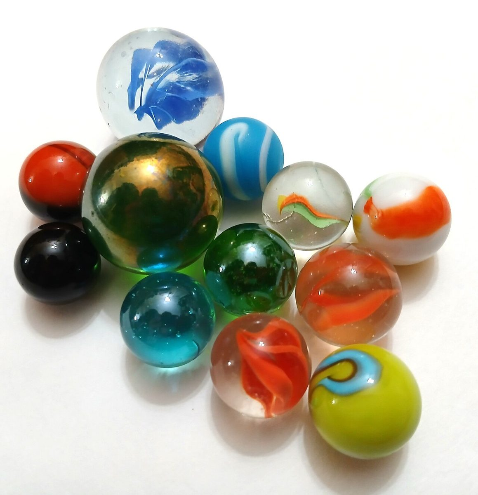
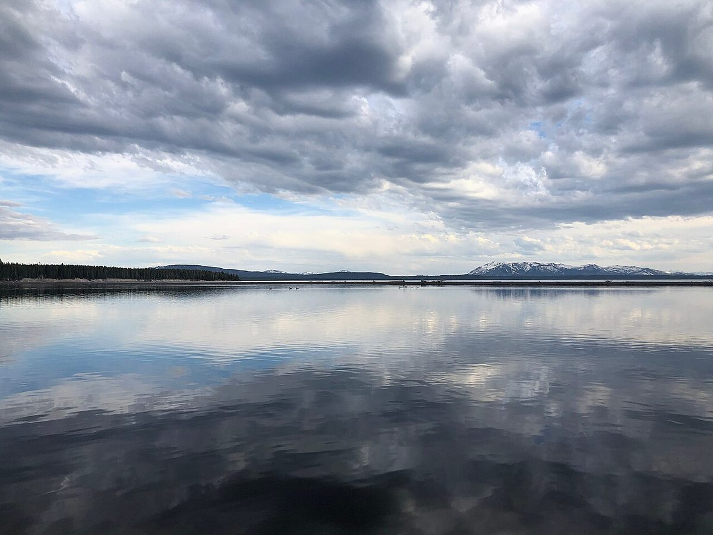
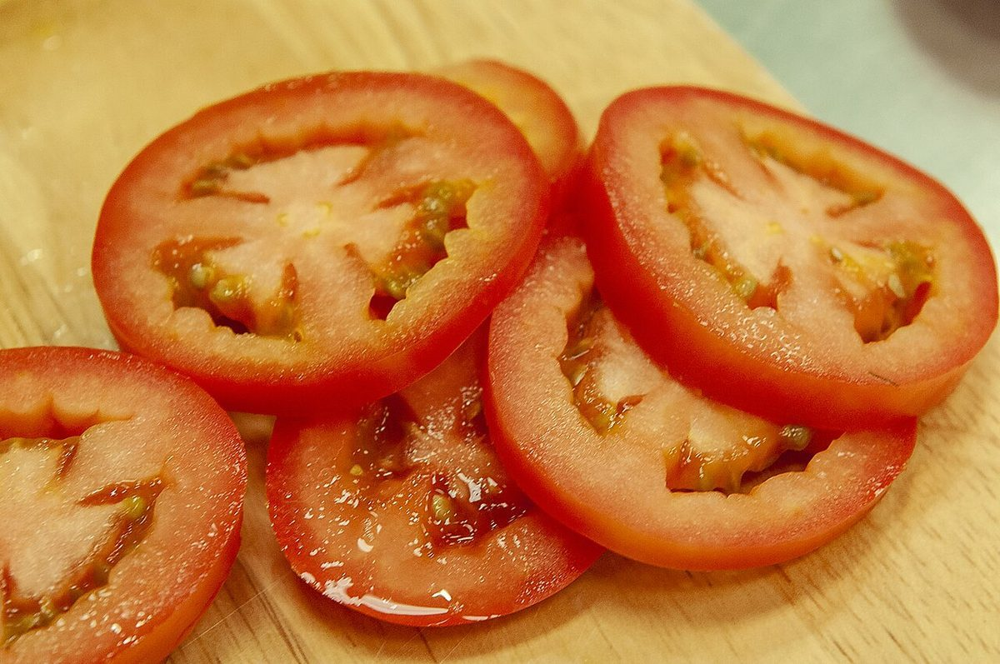
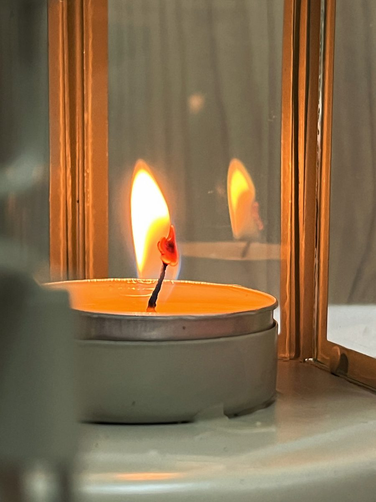

制作側の連想
サモワールを、部位ごとの配置図にしてみる
このサイトは、お湯を沸かしてためておく金属製の器具「サモワール」を図にしたつもりで作りました。六つの部位に番号をふり、上の図と並べています。制作側の連想で、お店の理念・由来とは無関係です。実際の製品の仕様や用途を示すものでもありません。
凡例
六つの部位
- 1煙突胴の中央を縦に通る筒。下から熱を送り、まわりの水をあたためる部分。
- 2ふた胴の上をおおう、ドーム型の覆い。
- 3胴水をためておく、ふくらんだ大きな本体。
- 4取っ手胴の両側についた、持ち運ぶための輪状の持ち手。
- 5蛇口胴の低い位置にある、お湯を注ぎ出す口とつまみ。
- 6脚台胴を支える、土台と脚の部分。
ギャラリー(イメージ)
器と光と質感の写真





写真はイメージです。お店のものではなく、お店で提供している商品を示すものでもありません。
ご案内
お店のこと(確認できたものだけ)
| 所在地 | 〒879-0105 大分県中津市犬丸1672-1 |
|---|---|
| 電話 | 準備中 |
| 営業時間 | 準備中 |
| 定休日 | 準備中 |
| ご予約 | 準備中 |
| 駐車場 | 準備中 |
| SNS | Instagram @watervalley__ |